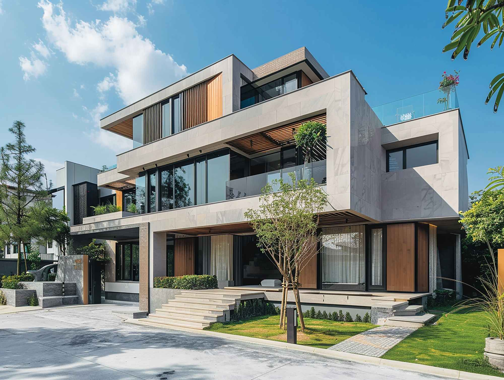
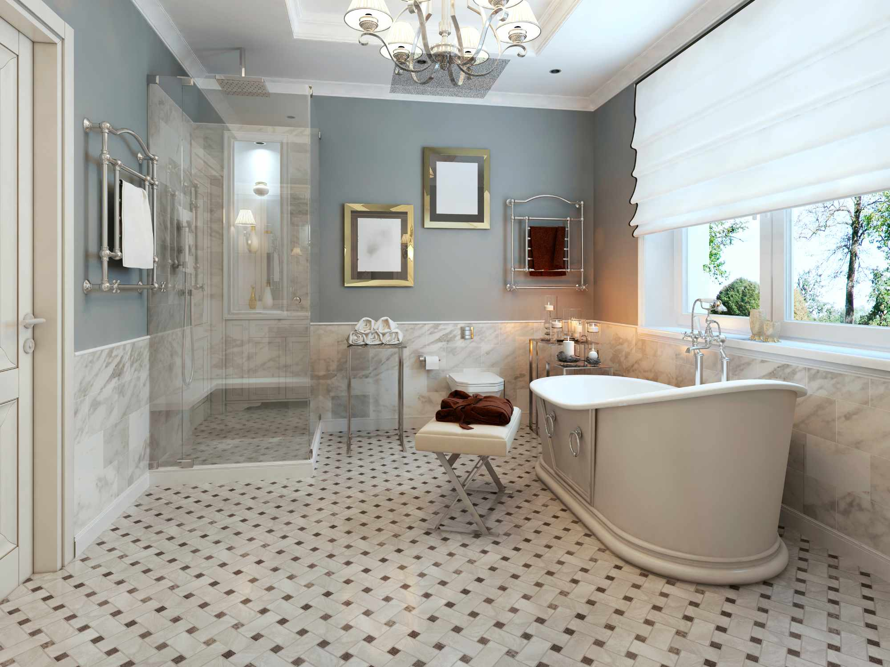
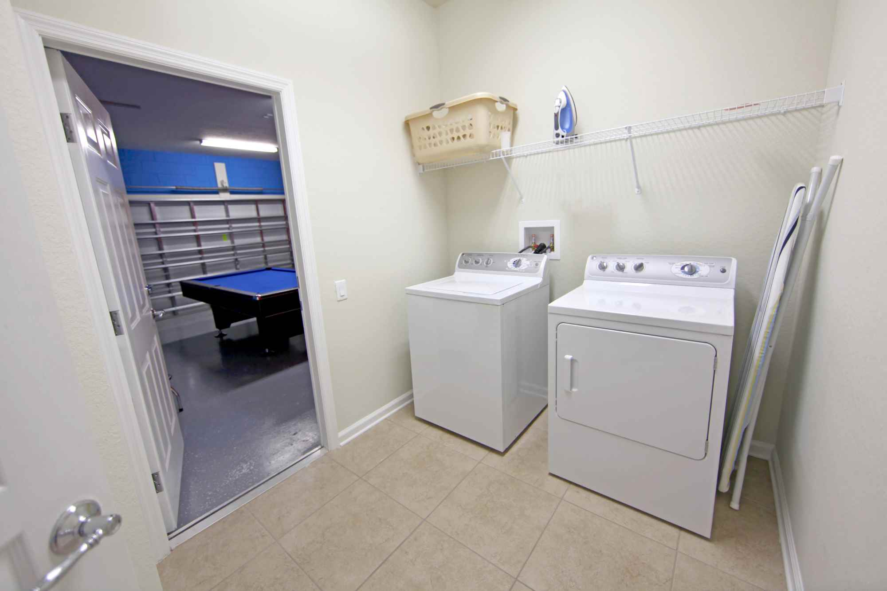
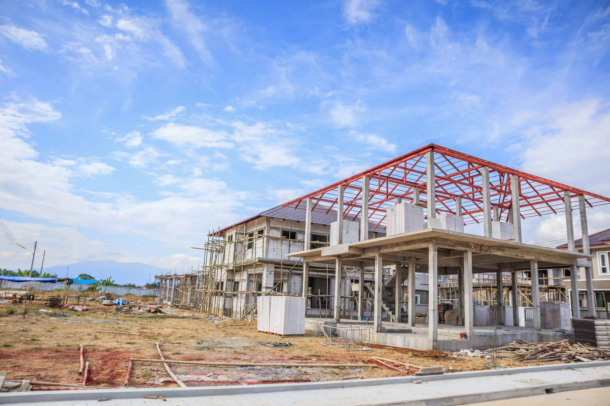
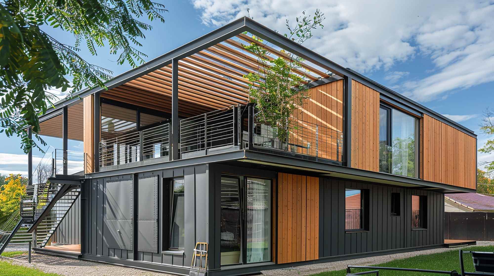

Commercial Building
A well-built commercial space is more than just walls and floors—it’s the foundation of a successful business. Every office, showroom, or retail space should reflect the brand’s values while offering a functional environment for staff and customers alike. The process requires careful planning, quality materials, and expert craftsmanship to ensure long-term performance. A great commercial build not only looks professional but also operates efficiently, supporting productivity every day. The right construction partner brings your vision to life with precision and dedication. When done right, a commercial building becomes an asset that grows with your business.
Creating the perfect commercial structure begins with understanding your needs and objectives. Every project is unique, and so the design must align with how the business operates and how the space will be used. Skilled builders and designers work together to achieve a seamless balance of practicality and aesthetics. From open-plan offices to complex retail fit-outs, attention to every detail makes the difference. Strong project management ensures smooth progress from start to finish. The goal is always to deliver a space that enhances both functionality and brand identity.
Quality construction is at the heart of every lasting commercial project. From the initial groundwork to the final finishing touches, precision defines the outcome. Using top-grade materials and proven building methods ensures strength, safety, and sustainability. Experienced builders know that timelines and budgets matter, so every stage is handled with clear communication and accountability. The best results come from combining expert craftsmanship with reliable service. Every completed project reflects the builder’s commitment to excellence.
A successful commercial building doesn’t just serve its purpose—it stands as a symbol of trust, growth, and progress. It becomes a place where businesses thrive, clients are welcomed, and employees feel proud to work. Over time, its durability and design continue to deliver value and reliability. With the right team behind your project, the process is smooth, transparent, and rewarding. Each brick and beam contributes to a vision that lasts for generations. Investing in quality commercial construction today means building the success of tomorrow.

Residential Building
A home is more than a structure—it’s where life unfolds, memories are made, and comfort takes shape. Residential building requires a blend of creativity, technical expertise, and understanding of what makes a house feel like home. Every design choice, from layout to materials, contributes to a space that reflects personality and lifestyle. The best homes are built not just for today’s needs but for the years ahead. A well-planned build delivers both functionality and beauty in perfect harmony. Building a home should be an exciting journey filled with trust, care, and craftsmanship.
The process begins with vision and planning. Understanding how each space will be used helps shape a design that feels natural and inviting. Skilled builders work closely with homeowners to turn ideas into tangible results, ensuring every detail supports daily comfort. Structural strength, energy efficiency, and smart layouts are at the core of every great residential project. Whether it’s a modern family home or a timeless classic, every residence tells its own story. Great homes are born from clear communication and a shared commitment to excellence.
Quality craftsmanship transforms a simple blueprint into a space full of warmth and character. Expert builders use trusted methods, durable materials, and modern techniques to achieve flawless results. Each wall, floor, and finish is completed with precision to ensure durability and style. Reliable timelines and transparent management help keep the building process smooth and stress-free. Every project is handled with care, ensuring the homeowner’s trust is never taken for granted. The difference lies in dedication to detail and pride in the finished result.
A well-built home doesn’t just meet expectations—it exceeds them. It becomes a place that adapts with time, where comfort and beauty grow together. From the foundation to the final finish, every stage is guided by passion and expertise. A truly exceptional home offers peace of mind, long-term value, and daily enjoyment. The right building partner makes your dream home a reality, one thoughtful step at a time. Investing in quality residential construction means investing in a better way of living.

Landscaping
A well-designed landscape has the power to transform any property into a welcoming and inspiring environment. It’s more than just greenery—it’s about creating outdoor spaces that enhance beauty, comfort, and functionality. Thoughtful landscaping blends nature with structure, bringing harmony between the home and its surroundings. From lush gardens to paved walkways and retaining walls, every element plays a part in creating balance. Professional landscaping not only improves curb appeal but also increases property value. The result is an outdoor space that feels peaceful, inviting, and uniquely yours.
Great landscaping begins with a vision and an understanding of the space. Each project is carefully planned to complement the architecture and lifestyle of the homeowner. Designers consider light, texture, and flow to create spaces that are practical and visually stunning. Whether you want a serene garden retreat or a bold outdoor entertainment area, the process starts with listening and planning. The goal is to shape the land in a way that feels natural yet refined. When done right, landscaping becomes an extension of the home itself.
Quality craftsmanship brings every landscaping concept to life. Skilled professionals handle every detail—from excavation and soil preparation to planting, paving, and structural features. Using premium materials and reliable techniques ensures the result stands the test of time. Every curve, surface, and plant placement is done with precision and care. Strong attention to detail ensures beauty in every corner, no matter the scale of the project. A well-built landscape not only looks stunning but functions effortlessly in everyday life.
Landscaping is ultimately about connection—between people, nature, and the spaces they inhabit. It creates outdoor areas that invite relaxation, gatherings, and everyday enjoyment. A thoughtfully designed landscape can completely change how a property feels and flows. With the right design, maintenance becomes easier, and beauty becomes effortless. Investing in quality landscaping means investing in your home’s long-term comfort and appeal. Every outdoor space deserves to be more than just seen—it should be experienced and enjoyed.

Swimming Pool Building
A swimming pool isn’t just a luxury—it’s a lifestyle addition that enhances comfort, relaxation, and entertainment. Building a pool requires careful planning, precise construction, and a deep understanding of design and function. The best pools combine style with strength, ensuring they look beautiful and perform flawlessly for years. Every detail, from shape to surface finish, contributes to the overall experience. A well-built pool transforms any backyard into a private oasis of calm and enjoyment. It’s where quality craftsmanship meets lasting leisure.
The pool building process starts with vision and creativity. Each design is tailored to suit the property’s layout, the client’s lifestyle, and the desired atmosphere. Whether it’s a sleek modern lap pool or a resort-style retreat, proper planning ensures perfect harmony with the surrounding landscape. Attention to depth, filtration, and finishing materials guarantees both beauty and safety. Collaboration between designers, engineers, and builders brings the concept to life. Every pool should reflect individuality while offering maximum comfort and functionality.
Construction quality defines how long a pool will last and how well it performs. Using the right materials, waterproofing methods, and reinforced structures ensures durability and reliability in every project. Skilled builders handle every stage with care, from excavation and framing to tiling and system installation. Consistent communication keeps clients informed and confident throughout the process. The combination of precision and professionalism results in a flawless finish. A well-constructed pool not only elevates a home’s appeal but also adds long-term value.
A beautiful swimming pool does more than decorate a yard—it creates experiences. It’s where families gather, friends relax, and memories are made under the open sky. Proper lighting, landscaping, and design integration turn it into a true centerpiece of the property. Maintenance becomes effortless when the foundation is built with quality and expertise. With the right team, every project becomes a reflection of luxury and lifestyle. Building a pool isn’t just about water—it’s about creating a space that defines enjoyment and elegance.

Kitchen Renovations
The kitchen is the heart of every home — a place where design meets daily living. A well-planned kitchen renovation can completely transform the way you cook, gather, and connect with family. It’s about blending style, comfort, and practicality into one seamless space. Every detail, from cabinetry and lighting to flooring and finishes, contributes to the overall flow. The goal is to create a kitchen that looks beautiful and functions effortlessly. With thoughtful design and expert craftsmanship, a simple upgrade becomes a lasting improvement.
A successful kitchen renovation begins with understanding how the space is used. Every family has unique routines and preferences, so the design must adapt to daily needs. Modern kitchens prioritise open layouts, efficient storage, and quality materials that withstand constant use. The process starts with planning and clear communication, ensuring the final result matches both vision and budget. Choosing the right colours, textures, and fixtures adds personality and warmth. The end result is a kitchen that feels inviting, organised, and truly yours.
Behind every stunning kitchen lies precision and craftsmanship. Skilled builders and renovators focus on every stage — from demolition and preparation to installation and finishing touches. Attention to detail ensures cabinetry fits perfectly, benchtops align seamlessly, and tiles enhance the overall aesthetic. Using durable materials and proven techniques guarantees long-term reliability. Each component is carefully chosen to balance functionality with style. When executed with expertise, your new kitchen becomes the perfect blend of elegance and efficiency.
A kitchen renovation is more than just a home improvement — it’s an investment in lifestyle. It enhances comfort, boosts property value, and creates a space where memories are made. A well-renovated kitchen encourages creativity and brings joy to everyday living. With the right design and professional execution, it becomes a space that inspires both cooking and connection. Every detail is built to serve a purpose, blending innovation with timeless design. In the end, your dream kitchen becomes the heart of your home in every sense.

Bathroom Renovations
A bathroom should be more than a functional space—it should be a personal retreat that combines comfort, style, and practicality. Renovating a bathroom offers the chance to enhance both design and efficiency, creating a space that feels refreshing every day. From modern minimalist layouts to luxurious spa-inspired designs, the possibilities are endless. A well-planned renovation improves usability while adding lasting value to your home. The right combination of materials, lighting, and fixtures can completely redefine the space. It’s where form meets function in the most essential part of your home.
The key to a successful bathroom renovation lies in thoughtful design and expert planning. Every element, from the placement of tiles to the choice of vanities and fittings, contributes to the overall flow. Proper waterproofing, ventilation, and durable materials ensure long-term performance and safety. Working with experienced renovators helps transform even small bathrooms into beautiful, efficient spaces. Careful planning ensures that every inch is used wisely without compromising comfort. The result is a bathroom that’s both stylish and built to last.
Craftsmanship plays a crucial role in creating a flawless bathroom finish. Skilled builders and tradespeople handle every stage with precision, from demolition to installation. Attention to detail in tiling, plumbing, and lighting ensures everything fits perfectly and functions smoothly. High-quality materials and expert workmanship help prevent issues down the line. Each surface, fixture, and fitting is selected to balance beauty with practicality. The final product is a bathroom that’s elegant, easy to maintain, and built for everyday comfort.
A renovated bathroom can completely transform your home’s atmosphere. It becomes a space of relaxation, rejuvenation, and everyday luxury. Whether you prefer a sleek modern style or a warm, classic look, a well-designed bathroom adds harmony to daily routines. Beyond aesthetics, it increases property value and enhances overall functionality. With the right design choices and trusted professionals, the renovation process is smooth and rewarding. The outcome is a bathroom that blends timeless appeal with modern convenience—a space you’ll love for years to come.

Laundry Renovations
The laundry room is one of the most used yet often overlooked spaces in a home. A well-designed renovation can transform it from a simple utility area into a highly functional and stylish workspace. Modern laundry design focuses on efficiency, smart storage, and durability. Every element, from layout to lighting, plays a role in creating a smooth workflow. A thoughtfully renovated laundry makes household tasks faster and more enjoyable. It’s about turning a practical space into one that works beautifully every day.
Every successful laundry renovation begins with careful planning and attention to detail. The goal is to create a design that maximises available space without feeling cluttered. Smart cabinetry, custom shelving, and quality benchtops help improve storage and usability. Proper ventilation and waterproofing ensure a safe, long-lasting environment. The addition of clever design features—like pull-out hampers or folding stations—adds convenience to daily routines. Functionality and form come together to make laundry care simpler and more efficient.
Quality workmanship and the right materials make all the difference in a laundry renovation. Experienced renovators ensure plumbing, electrical, and cabinetry installations are handled with precision. Every tile, fixture, and fitting is chosen for strength and easy maintenance. Durable surfaces, energy-efficient lighting, and reliable finishes guarantee years of performance. Attention to every small detail ensures a flawless and lasting result. The outcome is a room that looks great, feels organised, and handles daily wear with ease.
A beautifully renovated laundry adds comfort, convenience, and value to your home. It enhances everyday living by providing a clean, well-structured space that simplifies chores. The right renovation not only makes washing and folding easier but also adds a sense of order and calm. From compact designs to spacious family-sized layouts, each project is tailored to fit your lifestyle. With creative design and expert craftsmanship, even the most functional room can feel elegant. A well-renovated laundry proves that practicality can still have style.

Structural Construction
Strong structures are the backbone of every successful building project. Structural construction focuses on creating the framework that ensures durability, safety, and stability for years to come. Every beam, column, and foundation plays a vital role in supporting the overall design. Precision in engineering and workmanship is what transforms a plan into a lasting structure. It’s a discipline that demands both technical skill and meticulous attention to detail. When done right, structural construction provides the strength every building relies on.
The process begins with detailed planning and expert collaboration between engineers, builders, and designers. Each element must be calculated to withstand pressure, weight, and environmental factors. Advanced materials and modern building methods ensure that the final result meets all safety and performance standards. From residential homes to large-scale commercial buildings, quality structural work is essential. Every joint and connection is crafted to deliver long-term reliability. It’s the foundation on which all great construction stands.
High-quality structural construction isn’t just about strength—it’s also about precision and efficiency. Skilled builders combine technical expertise with modern tools to deliver consistent, accurate results. Whether working on concrete slabs, steel frames, or reinforced foundations, every stage demands focus and control. Using premium materials and proven techniques guarantees stability and endurance. Timely execution and clear communication keep the process smooth and transparent. The result is a framework that supports not only the building but also the client’s confidence.
A well-built structure is more than a technical achievement—it’s a commitment to quality and longevity. It forms the base for everything that follows, ensuring safety and functionality for generations. Expertly constructed frameworks protect investments and provide peace of mind. Structural construction is where engineering meets craftsmanship, and precision meets passion. It’s about building more than just a structure—it’s about creating a legacy of strength. When integrity and innovation come together, the result is construction that stands tall for decades.

Prefabricated Metal-Framed Home Additions
Expanding your home has never been more efficient or reliable than with prefabricated metal-framed additions. This modern building approach combines strength, speed, and design flexibility to create extra space without the stress of traditional construction. Metal framing offers excellent durability, resistance to weather, and long-term stability. It’s ideal for homeowners looking to add rooms, extensions, or entire new levels with precision and ease. Prefabrication ensures that each component is built to exact standards before arriving on-site. The result is a seamless addition that blends perfectly with your existing structure.
The beauty of prefabricated metal-framed additions lies in their efficiency and quality control. Each frame is manufactured in a controlled environment, reducing the risk of on-site delays and material waste. This streamlined process allows for faster installation and cleaner builds. Whether you’re adding a new living area, a home office, or an outdoor extension, the system ensures accuracy from start to finish. These structures are not only strong but also versatile, adapting to various architectural styles. The process combines innovation with craftsmanship to deliver dependable results every time.
Beyond their efficiency, metal-framed home additions offer exceptional durability and low maintenance. Steel and aluminium structures resist warping, pests, and moisture—issues common in timber builds. This makes them ideal for long-lasting construction that retains its strength and appearance over time. The lightweight nature of metal framing also allows for easier handling and design flexibility. With the right finishes and insulation, these additions achieve both comfort and energy efficiency. Every project benefits from materials that perform well under pressure and maintain structural integrity.
Choosing prefabricated metal-framed home additions is a smart investment in convenience and longevity. They provide a cost-effective way to expand living spaces without compromising on quality or design. From concept to completion, each step is handled with precision and care, ensuring a smooth and efficient build. Homeowners can enjoy modern, functional spaces that enhance lifestyle and property value. It’s a forward-thinking solution for those who want to build smarter, faster, and stronger. With prefabricated metal framing, you’re not just extending your home—you’re upgrading it for the future.